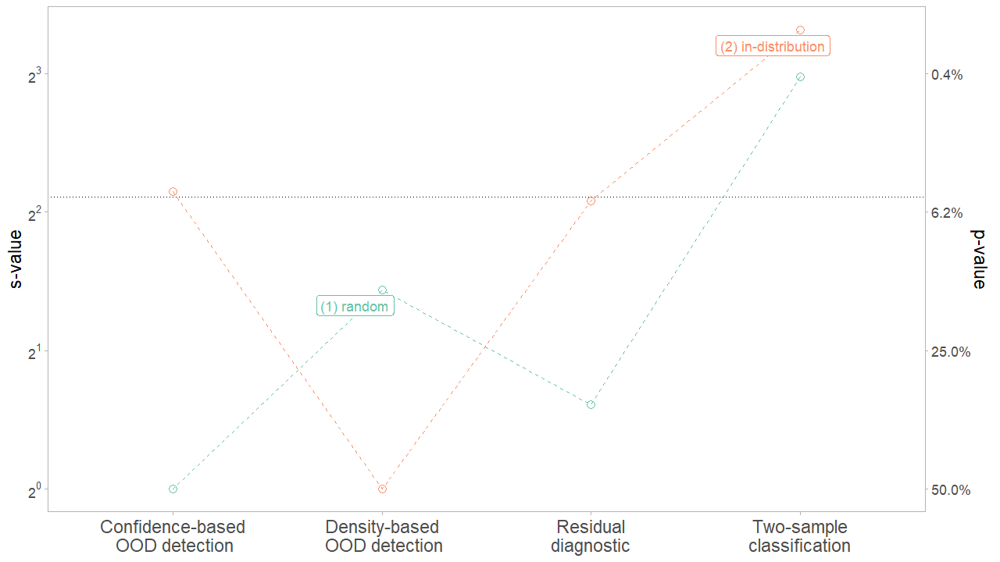

vignettes/motivation.Rmd
motivation.RmdNote that this vignette is adapted from the paper as cited below (Kamulete 2022).
Suppose we fit a predictive model on a training set and predict on a test set. Dataset shift, also known as data or population drift, occurs when training and test distributions are not alike. This is essentially a sample mismatch problem. Some regions of the data space are either too sparse or absent during training and gain importance at test time. We want methods to alert us to the presence of unexpected inputs in the test set. To do so, a measure of divergence between training and test set is required. Can we not simply use the many modern off-the-shelf multivariate tests of equal distributions for this?
One reason for moving beyond tests of equal distributions is that they are often too strict. They require high fidelity between training and test set everywhere in the input domain. However, not all changes in distribution are a cause for concern – some changes are benign. Practitioners distrust these tests because of false alarms. Polyzotis et al. (2019) comment:
statistical tests for detecting changes in the data distribution […] are too sensitive and also uninformative for the typical scale of data in machine learning pipelines, which led us to seek alternative methods to quantify changes between data distributions.
Even when the difference is small or negligible, tests of equal
distributions reject the null hypothesis of no difference. An alarm
should only be raised if a shift warrants intervention. Retraining
models when distribution shifts are benign is both costly and
ineffective. Monitoring model performance and data quality is a critical
part of deploying safe and mature models in production. To tackle these
challenges, we propose D-SOS instead.
In comparing the test set to the training set, D-SOS
pays more attention to the regions –- typically, the outlying regions –-
where we are most vulnerable. To confront false alarms, it uses a robust
test statistic, namely the weighted area under the receiver operating
characteristic curve (WAUC). The weights in the WAUC discount the safe
regions of the distribution. To the best of our knowledge, this is the
first time that the WAUC is being used as a test statistic in this
context. The goal of D-SOS is to detect non-negligible
adverse shifts. This is reminiscent of noninferiority tests, widely
used in healthcare to determine if a new treatment is in fact not
inferior to an older one. Colloquially, the D-SOS null
hypothesis holds that the new sample is not substantively worse than the
old sample, and not that the two are equal.
D-SOS moves beyond tests of equal distributions and lets
users specify which notions of outlyingness to probe. The choice of the
score function plays a central role in formalizing what we mean by
worse. The scores can come from out-of-distribution detection,
two-sample classification, uncertainty quantification, residual
diagnostics, density estimation, dimension reduction, and more. While
some of these scores are underused and underappreciated in two-sample
tests, they can be more informative in some cases. The main takeaway is
that given a method to assign an outlier score to a data point,
D-SOS uplifts these scores and turns them into a two-sample
test for no adverse shift.
For illustration, we apply D-SOS to the canonical
iris dataset. The task is to classify the species of Iris
flowers based on \(d=4\) covariates
(features) and \(n=50\) observations
for each species. We show how D-SOS helps diagnose false
alarms. We highlight that (1) changes in distribution do not necessarily
hurt predictive performance, and (2) points in the densest regions of
the distribution can be the most difficult – unsafe – to predict.
We consider four tests of no adverse shift. Each test uses a different score. For two-sample classification, this score is the probability of belonging to the test set. For density-based out-of-distribution (OOD) detection, the score comes from isolation forest – this is (roughly) inversely related to the local density. For residual diagnostics, it is the out-of-sample (out-of-bag) prediction error from random forests. Finally, for confidence-based OOD detection (prediction uncertainty), it is the standard error of the mean prediction from random forests. Only the first notion of outlyingness – two-sample classification – pertains to modern tests of equal distributions; the others capture other meaningful notions of adverse shifts. For all these scores, higher is worse: higher scores indicate that the observation is diverging from the desired outcome or that it does not conform to the training set.
For the subsequent tests, we split iris into 2/3 training and 1/3 test set. The train-test pairs correspond to two partitioning strategies: (1) random sampling and (2) in-distribution (most dense) examples in the test set. How do these sample splits fare with respect to the aforementioned tests? Let \(s\) and \(p\) denote \(s\)−value and \(p\)−value. The results are reported on the \(s = − log2(p)\) scale because it is intuitive. An \(s\)−value of k can be interpreted as seeing k independent coin flips with the same outcome –- all heads or all tails –- if the null is that of a fair coin. This conveys how incompatible the data is with the null.
As plotted, the case with (1) random sampling in green exemplifies the type of false alarms we want to avoid. Two-sample classification, standing in for tests of equal distributions, is incompatible with the null of no adverse shift (a \(s\)−value of around 8). But this shift does not carry over to the other tests. Residual diagnostics, density-based and confidence-based OOD detection are all fairly compatible with the view that the test set is not worse. Had we been entirely reliant on two-sample classification, we may not have realized that this shift is essentially benign. Tests of equal distributions alone give a narrow perspective on dataset shift.

Moving on to the case with (2) in-distribution test set in orange, density-based OOD detection
does not flag this sample as expected. We might be tempted to conclude
that the in-distribution observations are safe, and yet, the tests based
on residual diagnostics and confidence-based OOD detection are fairly
incompatible with this view. Some of the densest points are concentrated
in a region where the classifier does not discriminate very well: the
species versicolor and virginica overlap. That
is, the densest observations are not necessarily safe. Density-based OOD
detection glosses over this: the trouble may well come from inliers that
are difficult to predict. We get a more holistic perspective of dataset
shift because of these complementary notions of outlyingness.
The point of this exercise is twofold. First, we stress the limits of
tests of equal distributions when testing for dataset shift. They are
unable, by definition, to detect whether the shift is benign or not.
Second, we propose a family of tests based on outlier scores,
D-SOS, which offers a more holistic view of dataset shift.
D-SOS is flexible and can be easily extended to test for
other modern notions of outlyingness such as trust scores. We hope this
encourages more people to test for adverse shifts.